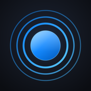

Sonic PuritySonic Purity — Support
Before anything else: if your phone got wet
Sonic Purity moves air. It is not a repair tool, it cannot undo liquid damage, and it will not waterproof anything.
If your phone was submerged, is behaving oddly, is not charging, or shows a liquid warning, stop and contact Apple Support or an authorised repair provider. Running a cleaning cycle is not a substitute for that, and neither is rice.
Common questions
The cycle ran but my speaker still sounds muffled
Try, in order:
- Turn the volume up. The diaphragm has to swing hard to move a droplet. The app counts your volume in hardware steps and warns you below 14 of 16.
- Take the case off and hold the phone with the speaker pointing at the floor, over a towel. Gravity does a meaningful share of the work.
- Run it more than once. Two or three cycles is normal.
- Use Water Eject rather than Quick Clean. Quick Clean is a ten-second pass; Water Eject is thirty seconds of the same pulse and does more of the work.
- Try Deep Clean or Pulse Mode if a short cycle has not helped.
If several cycles change nothing, the problem is probably not water sitting in the grille, and no amount of sound will move it. That is the point to talk to Apple Support.
Why will it not run with my headphones connected?
Because 165 Hz near full scale, in an ear canal, is a genuine hearing risk. Cleaning modes refuse to start on a headphone or Bluetooth route and stop immediately if you connect something mid-cycle. This is deliberate and not configurable.
Why does the tone below 20 Hz not exist?
It never did. Earlier marketing copy mentioned frequencies below 20 Hz; that was incorrect and has been removed. A phone speaker produces essentially nothing down there, so the tone generator covers 20 Hz to 20 kHz, which is the range the hardware can actually reproduce. Pro adds 0.1 Hz resolution within that range.
Is the dB meter accurate?
It is calibrated well enough to compare rooms and spot when something is loud enough to matter. It is not a certified sound level meter, phone microphones vary between models, and it should not be used for occupational or legal noise measurement. Settings → Calibrate lets you offset it against a reference if you have one.
What does Pro unlock?
Smart Clean's microphone-tuned cycle, the four advanced cleaning modes, all six speaker diagnostics with their health score and history, the square / triangle / sawtooth waveforms, 0.1 Hz frequency resolution, and export of your cleaning and diagnostic history.
The core water-eject cycle, Quick Clean, the dB meter, the noise generators, the sine tone generator, the sleep timers, and the 7-day routine tracker are free and always will be.
How do I manage or cancel a subscription?
Settings → Manage Subscription in the app, or iOS Settings → your name → Subscriptions. Cancellation is handled by Apple; we cannot do it for you and never see your account.
I bought Pro and it is not showing
Settings → Restore Purchases. If that does not work, make sure you are signed in with the Apple Account you bought it on. Purchases are tied to that account, not to the device.
Refunds
Refunds are handled by Apple, not by us: reportaproblem.apple.com
Do you collect any data?
No. No account, no analytics, no network requests. Microphone audio is measured and discarded and never leaves your device. See the Privacy Policy.
Reporting a problem
Email ardapolat0901@gmail.com with:
- Your iPhone model and iOS version
- What you did and what happened
- The app version, from Settings, at the bottom
Please do not send audio recordings; we have no way to use them and would rather not receive them.